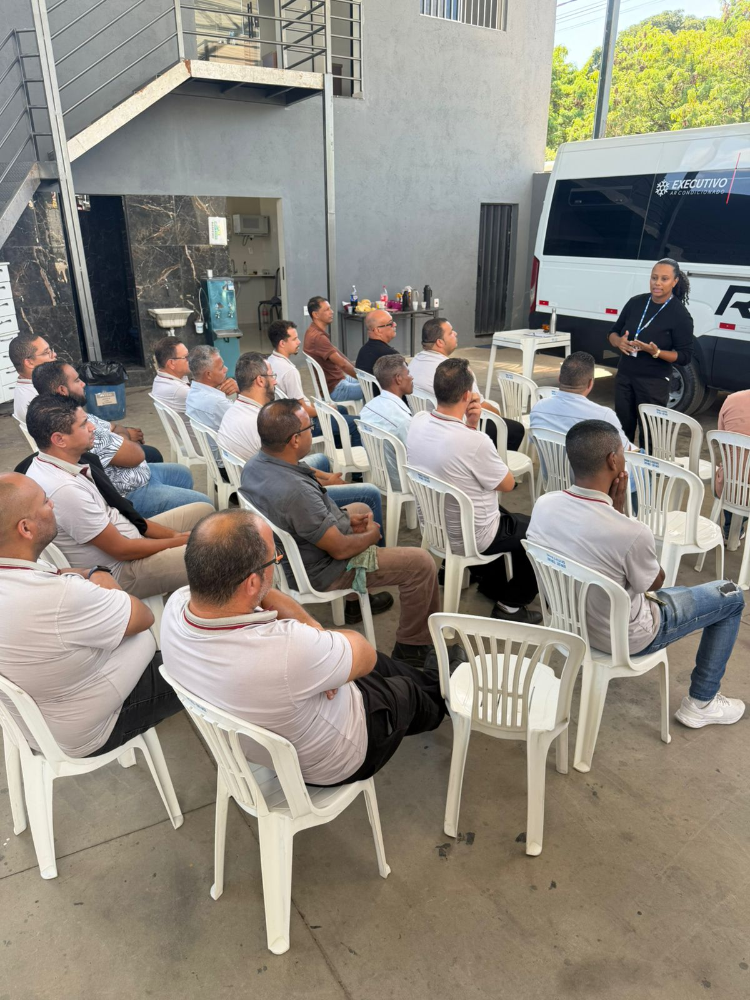

Transporte de funcionários
Fretamento contínuo para empresas, com rotas planejadas, pontualidade e conforto para equipes.
Fretamento, turismo e transporte corporativo
Especializada em transporte e fretamento de passageiros em Minas Gerais, com forte atuação no transporte corporativo de colaboradores e soluções para viagens, turismo e eventos.
Fretamento contínuo para empresas, com rotas planejadas, pontualidade e conforto para equipes.
Atendimento para eventos, feiras, congressos, viagens, excursões e necessidades pontuais.
Viagens em grupo com organização, segurança operacional e veículos adequados para cada roteiro.
Soluções flexíveis para grupos menores, mantendo o padrão RAD de cuidado e responsabilidade.
Blog e notícias

SegurançaColaboradores participam de treinamento sobre prevenção de acidentes e condução responsável.
 Iniciativas sociais
Iniciativas sociais
Como a RAD Turismo trabalha a segurança no trânsito durante todo o ano, não só em maio.
Trabalhe conosco
Buscamos profissionais comprometidos com segurança, pontualidade e bom atendimento. Cadastre seu currículo e venha construir essa história com a gente.